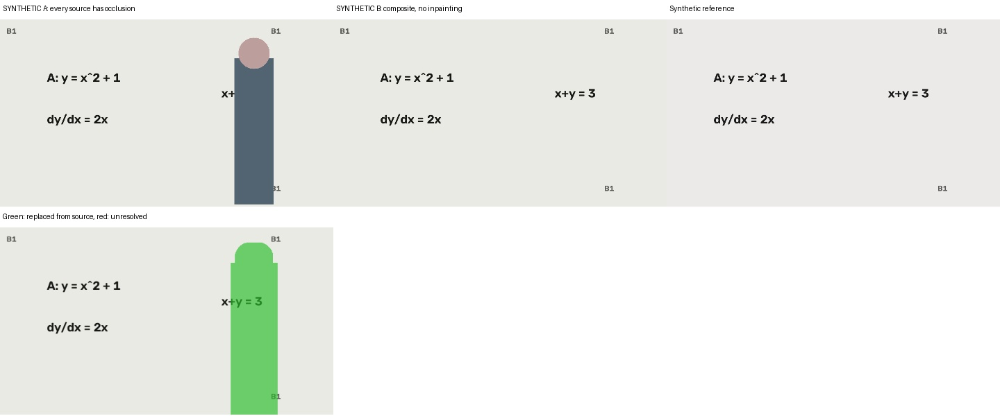
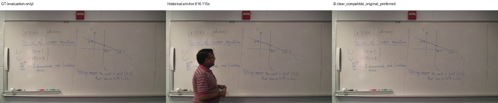
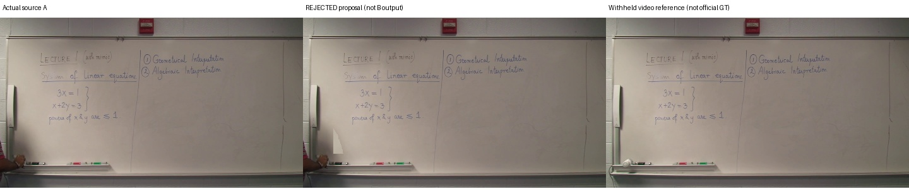
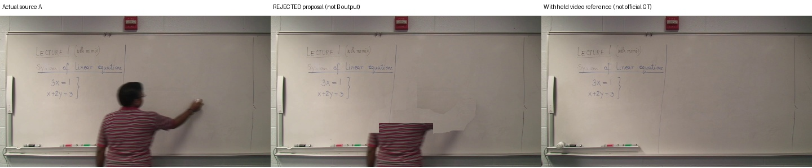

원본 우선·같은 판서의 영역 합성·출처 재현을 구현했습니다. 정상 AccessMath 4+15개 판서에서는 추가 합성을 채택하지 않았습니다. 실영상 합성의 일반적 개선은 아직 입증하지 못했습니다.
Lecture 01 GT·원본·A/B 비교 · testing 강의 비교 · 구현·한계 보고서
실제 영상 성능과 구분합니다. F1 88.62% → 99.88%. 한 개 누적 판서를 유지하며 실제 원본의 상보적 영역으로 합성합니다.

과거 616.1155초 실패 원본을 의도적으로 기준으로 지정한 별도 진단입니다. B가 609.1085초 원본을 선택해 F1 73.27% → 96.39%. 정상 A/B 개선이나 합성 성공으로 합산하지 않습니다.

아래는 기각한 시도이며 제공되는 B 결과가 아닙니다. 참고 원본은 공식 GT와 구분합니다.

b00054: 후보를 채택하면 참고 원본 대비 F1 약 0.40%p 하락.

b00112: 픽셀 점수가 올라도 교수자 잔상과 영역 경계가 남아 기각했습니다.